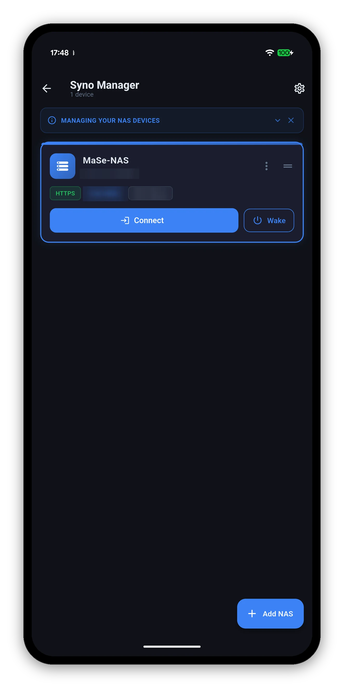
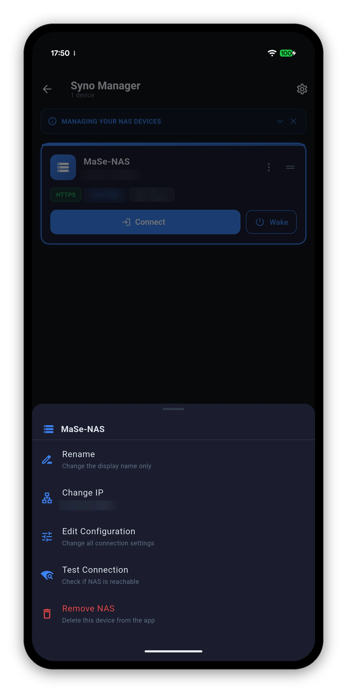

Add as many as you like. Each keeps its own credentials, its own dashboard layout and its own settings, so the backup target in the garage does not have to look like the media server in the lounge.

Reached from Settings › Manage NAS Devices, or as the screen the app opens on when you have more than one and have set it to ask.
| Action | What it does |
|---|---|
| Rename | Changes the display name only - the app's label for it. The NAS's own server name is untouched; that lives in DSM's Control Panel. |
| Change IP | A shortcut for the field that changes most often - the address and port - without walking the whole form. |
| Edit Configuration | The full form: HTTPS, certificate verification, credentials, two-factor authentication and the camera live-view tunnel. |
| Test Connection | Checks reachability without changing anything, and distinguishes "cannot reach it" from "reached it and the credentials were refused". |
| Remove NAS | Deletes the entry and its stored credentials from the app. Nothing on the NAS is touched. |

Wake the NAS, or anything else on your network through it.